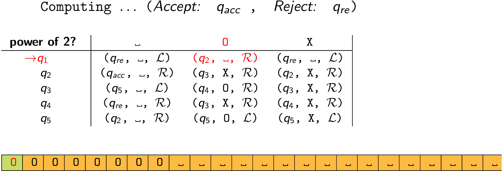

In this example, we design a Turing machine to check whether the number of 0s in a string of 0s is a power of 2.

We do this by first checking if there are no 0s. If there is at least one, we cancel out half the 0s; if there are odd number of 0s then we instantly reject. We then repeat the process over and over again: check if there are no 0s, in which case accept because it means that by repeatedly halving, we were left with nothing and so it was a power of 2; otherwise, cancel out half of the half that remained; if there are odd number of 0s then we instantly reject.
First, let us understand the meaning of some of those informal terms above:
How do we cancel out exactly half? By cancelling every alternate one, beginning with the second.
How do we check that there are even number of 0s left? We must not encounter a blank cell (indicating the end of the input) when we are in the “saw odd number of 0s” state.
Now one small point that is easy to overlook. Remember that there is no marker for the beginning of the tape so we have to add one. As a result, the first 0 should be marked not with an X but another character, and then why not a blank? Then when searching for the beginning one simply searches for the blank character while sweeping left.
What does it mean to sweep from left to right until the characters \(x\) or \(y\)? One is referring to a state, say \(q_i\), here, and that state is partly characterized by the fact \(\delta(q_i, a) = (q_i, a, R)\) as long as \(a\) is not x or y. In other words, it remains in the same state as long as it does not encounter \(x\) or \(y\) and leaves those characters untouched and shifts one cell to the right.
When we are starting with state \(q_0\) we mark the first character with a blank; since we are doing something special, we designate it a separate state and jump out of it soon. We need to check if we encounter no 0s during an entire sweep, so we give that a state \(q_1\); if we do encounter a 0, we need to keep in mind if there were even or odd number of them and to do that we simply designate two different states, \(q_2\) and \(q_3\), which we keep oscillating between as and when we encounter a 0 during the sweep. When the sweep is over, we need to get back to the beginning via a new state, \(q_5\).
\(\mathbf{q_0}\): If you read a 0, then mark it with a blank to know that this is the beginning, and proceed to \(q_1\), otherwise reject. If it begins with a blank, it is to be understood that there are no 0s (unless the input was corrupted), and so it accepts. We never return to the start state again.
| _ | 0 | X | |
|---|---|---|---|
| \(q_0\) | (Accept, _, L) | (\(q_1\), _, R) | (Reject, _, L) |
\(\mathbf{q_1}\): The purpose of this state is to check if there are no 0s during a sweep. So keep sweeping to the right until you hit a 0 or blank (i.e. move right but remain in the same state on seeing an X). If you hit a 0, shift to the state \(q_2\) which is meant to denote that even number of 0s were read. But if you encounter a blank, accept.
| _ | 0 | X | |
|---|---|---|---|
| \(q_1\) | (Accept, _, R) | (\(q_2\), X, R) | (\(q_1\), X, R) |
\(\mathbf{q_2}\): Keep sweeping, ignoring the 0s that were already marked with an X, until you encounter a 0, in which case switch to \(q_3\) so that you keep in mind that an odd number of 0s were read. If you encounter a blank then it means that the string is over and you need to sweep back.
| _ | 0 | X | |
|---|---|---|---|
| \(q_2\) | (\(q_4\), _, L) | (\(q_3\), 0, R) | (\(q_2\), X, R) |
\(\mathbf{q_3}\): Just like \(q_2\), except that this time you have to switch back to \(q_2\) if a 0 has been encountered to indicate that even number off 0s were encountered and if you see blank symbol now, it means there were odd number of 0s left so reject.
| _ | 0 | X | |
|---|---|---|---|
| \(q_3\) | (Reject, _, R) | (\(q_2\), X, R) | (\(q_3\), X, R) |
\(\mathbf{q_4}\): This state finds the beginning by sweeping left until the blank symbol. Therefore, unless it sees the blank symbol, it keeps moving left, leaving the symbols intact, and remaining in the same state. When it encounters the blank symbol, it switches to state \(q_1\) to begin sweeping to the right and check if there are no 0s.
| _ | 0 | X | |
|---|---|---|---|
| \(q_4\) | (\(q_1\), _, R) | (\(q_4\), 0, L) | (\(q_4\), X, L) |
Here is the final transition table:
| _ | 0 | X | |
|---|---|---|---|
| \(q_0\) | (Reject, _, L) | (\(q_1\), _, R) | (Reject, _, L) |
| \(q_1\) | (Accept, _, R) | (\(q_2\), X, R) | (\(q_1\), X, R) |
| \(q_2\) | (\(q_4\), _, L) | (\(q_3\), 0, R) | (\(q_2\), X, R) |
| \(q_3\) | (Reject, _, R) | (\(q_2\), X, R) | (\(q_3\), X, R) |
| \(q_4\) | (\(q_1\), _, R) | (\(q_4\), 0, L) | (\(q_4\), X, L) |
Here is an input which should be accepted because it is a string of 0s of length \(2^3\). Below, we also consider one that is rejected.
input: 00000000
: |0| 0 0 0 0 0 0 0 ... \(\delta:\)(\(q_0\), 0) \(\to\) (\(q_1\), , R)
: _ |0| 0 0 0 0 0 0 ... \(\delta:\)(\(q_1\), 0) \(\to\) (\(q_2\), X, R)
: _ X |0| 0 0 0 0 0 ... \(\delta:\)(\(q_2\), 0) \(\to\) (\(q_3\), 0, R)
: _ X 0 |0| 0 0 0 0 ... \(\delta:\)(\(q_3\), 0) \(\to\) (\(q_2\), X, R)
: _ X 0 X |0| 0 0 0 ... \(\delta:\)(\(q_2\), 0) \(\to\) (\(q_3\), 0, R)
: _ X 0 X 0 |0| 0 0 ... \(\delta:\)(\(q_3\), 0) \(\to\) (\(q_2\), X, R)
: _ X 0 X 0 X |0| 0 ... \(\delta:\)(\(q_2\), 0) \(\to\) (\(q_3\), 0, R)
: _ X 0 X 0 X 0 |0|... \(\delta:\)(\(q_3\), 0) \(\to\) (\(q_2\), X, R)
: _ X 0 X 0 X 0 X | |... \(\delta:\)(\(q_2\), ) \(\to\) (\(q_4\), , L)
: _ X 0 X 0 X 0 |X| _ ... \(\delta:\)(\(q_4\), X) \(\to\) (\(q_4\), X, L)
: _ X 0 X 0 X |0| X _ ... \(\delta:\)(\(q_4\), 0) \(\to\) (\(q_4\), 0, L)
: _ X 0 X 0 |X| 0 X _ ... \(\delta:\)(\(q_4\), X) \(\to\) (\(q_4\), X, L)
: _ X 0 X |0| X 0 X _ ... \(\delta:\)(\(q_4\), 0) \(\to\) (\(q_4\), 0, L)
: _ X 0 |X| 0 X 0 X _ ... \(\delta:\)(\(q_4\), X) \(\to\) (\(q_4\), X, L)
: _ X |0| X 0 X 0 X _ ... \(\delta:\)(\(q_4\), 0) \(\to\) (\(q_4\), 0, L)
: _ |X| 0 X 0 X 0 X _ ... \(\delta:\)(\(q_4\), X) \(\to\) (\(q_4\), X, L)
: | | X 0 X 0 X 0 X _ ... \(\delta:\)(\(q_4\), ) \(\to\) (\(q_1\), , R)
: _ |X| 0 X 0 X 0 X _ ... \(\delta:\)(\(q_1\), X) \(\to\) (\(q_1\), X, R)
: _ X |0| X 0 X 0 X _ ... \(\delta:\)(\(q_1\), 0) \(\to\) (\(q_2\), X, R)
: _ X X |X| 0 X 0 X _ ... \(\delta:\)(\(q_2\), X) \(\to\) (\(q_2\), X, R)
: _ X X X |0| X 0 X _ ... \(\delta:\)(\(q_2\), 0) \(\to\) (\(q_3\), 0, R)
: _ X X X 0 |X| 0 X _ ... \(\delta:\)(\(q_3\), X) \(\to\) (\(q_3\), X, R)
: _ X X X 0 X |0| X _ ... \(\delta:\)(\(q_3\), 0) \(\to\) (\(q_2\), X, R)
: _ X X X 0 X X |X| _ ... \(\delta:\)(\(q_2\), X) \(\to\) (\(q_2\), X, R)
: _ X X X 0 X X X | |... \(\delta:\)(\(q_2\), ) \(\to\) (\(q_4\), , L)
: _ X X X 0 X X |X| _ ... \(\delta:\)(\(q_4\), X) \(\to\) (\(q_4\), X, L)
: _ X X X 0 X |X| X _ ... \(\delta:\)(\(q_4\), X) \(\to\) (\(q_4\), X, L)
: _ X X X 0 |X| X X _ ... \(\delta:\)(\(q_4\), X) \(\to\) (\(q_4\), X, L)
: _ X X X |0| X X X _ ... \(\delta:\)(\(q_4\), 0) \(\to\) (\(q_4\), 0, L)
: _ X X |X| 0 X X X _ ... \(\delta:\)(\(q_4\), X) \(\to\) (\(q_4\), X, L)
: _ X |X| X 0 X X X _ ... \(\delta:\)(\(q_4\), X) \(\to\) (\(q_4\), X, L)
: _ |X| X X 0 X X X _ ... \(\delta:\)(\(q_4\), X) \(\to\) (\(q_4\), X, L)
: | | X X X 0 X X X _ ... \(\delta:\)(\(q_4\), ) \(\to\) (\(q_1\), , R)
: _ |X| X X 0 X X X _ ... \(\delta:\)(\(q_1\), X) \(\to\) (\(q_1\), X, R)
: _ X |X| X 0 X X X _ ... \(\delta:\)(\(q_1\), X) \(\to\) (\(q_1\), X, R)
: _ X X |X| 0 X X X _ ... \(\delta:\)(\(q_1\), X) \(\to\) (\(q_1\), X, R)
: _ X X X |0| X X X _ ... \(\delta:\)(\(q_1\), 0) \(\to\) (\(q_2\), X, R)
: _ X X X X |X| X X _ ... \(\delta:\)(\(q_2\), X) \(\to\) (\(q_2\), X, R)
: _ X X X X X |X| X _ ... \(\delta:\)(\(q_2\), X) \(\to\) (\(q_2\), X, R)
: _ X X X X X X |X| _ ... \(\delta:\)(\(q_2\), X) \(\to\) (\(q_2\), X, R)
: _ X X X X X X X | |... \(\delta:\)(\(q_2\), ) \(\to\) (\(q_4\), , L)
: _ X X X X X X |X| _ ... \(\delta:\)(\(q_4\), X) \(\to\) (\(q_4\), X, L)
: _ X X X X X |X| X _ ... \(\delta:\)(\(q_4\), X) \(\to\) (\(q_4\), X, L)
: _ X X X X |X| X X _ ... \(\delta:\)(\(q_4\), X) \(\to\) (\(q_4\), X, L)
: _ X X X |X| X X X _ ... \(\delta:\)(\(q_4\), X) \(\to\) (\(q_4\), X, L)
: _ X X |X| X X X X _ ... \(\delta:\)(\(q_4\), X) \(\to\) (\(q_4\), X, L)
: _ X |X| X X X X X _ ... \(\delta:\)(\(q_4\), X) \(\to\) (\(q_4\), X, L)
: _ |X| X X X X X X _ ... \(\delta:\)(\(q_4\), X) \(\to\) (\(q_4\), X, L)
: | | X X X X X X X _ ... \(\delta:\)(\(q_4\), ) \(\to\) (\(q_1\), , R)
: _ |X| X X X X X X _ ... \(\delta:\)(\(q_1\), X) \(\to\) (\(q_1\), X, R)
: _ X |X| X X X X X _ ... \(\delta:\)(\(q_1\), X) \(\to\) (\(q_1\), X, R)
: _ X X |X| X X X X _ ... \(\delta:\)(\(q_1\), X) \(\to\) (\(q_1\), X, R)
: _ X X X |X| X X X _ ... \(\delta:\)(\(q_1\), X) \(\to\) (\(q_1\), X, R)
: _ X X X X |X| X X _ ... \(\delta:\)(\(q_1\), X) \(\to\) (\(q_1\), X, R)
: _ X X X X X |X| X _ ... \(\delta:\)(\(q_1\), X) \(\to\) (\(q_1\), X, R)
: _ X X X X X X |X| _ ... \(\delta:\)(\(q_1\), X) \(\to\) (\(q_1\), X, R)
: _ X X X X X X X | |... \(\delta:\)(\(q_1\), ) \(\to\) (Accept, _, R)
: _ X X X X X X X _ | |... Accept
Now consider this one which is rejected.
input: 000
: |0| 0 0 ... \(\delta:\)(\(q_0\), 0) \(\to\) (\(q_1\), , R)
: _ |0| 0 ... \(\delta:\)(\(q_1\), 0) \(\to\) (\(q_2\), X, R)
: _ X |0|... \(\delta:\)(\(q_2\), 0) \(\to\) (\(q_3\), 0, R)
: _ X 0 | |... \(\delta:\)(\(q_3\), ) \(\to\) (Reject, _, R)
: _ X 0 _ | |... Reject